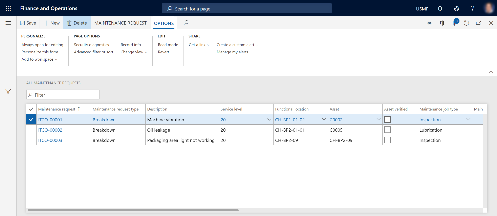

Maintenance requests
You can set up various types of requests to use in your company. Maintenance requests are one type. Maintenance requests are used to request that a work order be required for a specific job. A maintenance request can be created by any user who has access to Asset Management functionality. A planner or manager can then decide whether a maintenance request should be converted to a work order, or whether it should complete its own lifecycle.
View maintenance requests
Select Asset management > Common > Maintenance requests > All maintenance requests or Active maintenance requests.
The All maintenance requests list page shows all maintenance requests, regardless of their lifecycle state. The Active maintenance requests lists page shows only maintenance requests that are in an active state.
The following illustration shows an example of the All maintenance requests list page.
